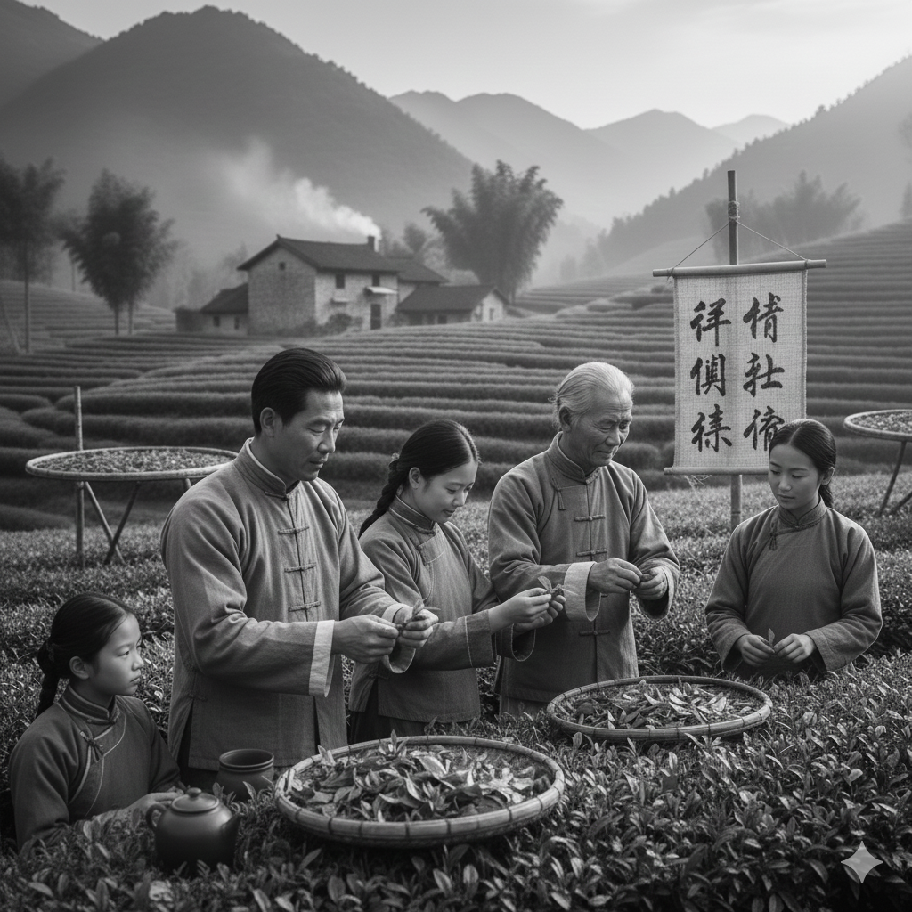
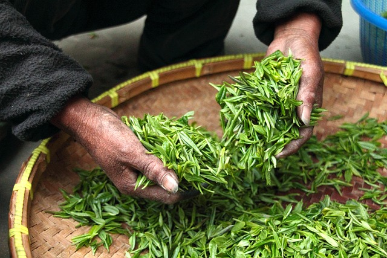
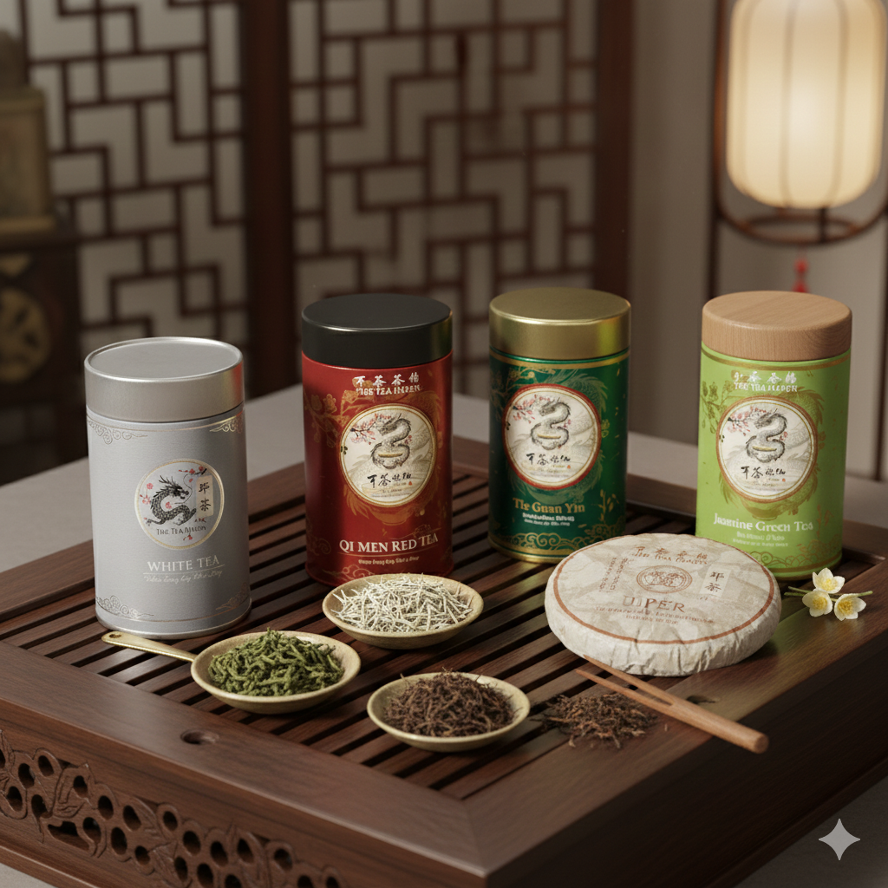

The Founding Story
Our journey is rooted in the rich soil of Anhui and Fujian provinces, where our family's involvement in tea cultivation began around 1850. During this era, tea was not merely a commodity; it was an art form and a pillar of cultural exchange. Our ancestors were not just farmers, but dedicated stewards of the leaf, focused on perfecting the meticulous, traditional techniques essential for producing the finest Qi Men Red and Tie Guan Yin Oolong. This enduring commitment to quality over quantity became the enduring promise of our family.

While the traditions survived, the direct line between the tea gardens and the global market became increasingly fragmented over the following century. As the world modernized, the unique, single-estate harvests often became lost within larger supply chains, making true, heirloom quality difficult to find.
It was this disconnect that sparked the dream for the modern "The Tea Haven." We, the descendants of that 1850 legacy—realized that the world needed a direct link back to those authentic, pristine sources.

The Meticulous Harvest: Honoring Tradition
The difference between fine tea and common tea truly begins in the garden, governed by time and touch. Our teas are hand-plucked by skilled artisans, often following techniques passed down through generations that dictate not just how to pluck, but when. The harvest window for our most prized teas is incredibly brief—sometimes lasting only a few precious days during the early spring before the sun grows too hot or the leaves mature beyond their prime. This crucial timing locks in the peak concentration of subtle, complex flavors.This practice is not merely tradition; it is rigorous, foundational quality control. A machine cannot possess the human sensory discernment needed in a premium harvest. A machine cannot discern the difference between a delicate white tea bud and an inferior, tougher, and less flavorful leaf. Our farmers' hands are trained to recognize and only choose the precise material that ensures maximum flavor and smoothness for each varietal.
The Tea Haven Collection
The Tea Haven Collection is a curated gallery of China's most exquisite harvests, rooted in the quality standards established by our family's heritage in 1850.
We invite you to explore a comprehensive selection of single-estate teas, including the finest Green, Black, Oolong, White, Pu'er, and Yellow varieties, sourced directly from the legendary gardens of Fujian, Yunnan, and beyond. Every leaf, from the delicate Bai Hao Yin Zhen bud to the robust Qi Men Red, is hand-plucked and minimally processed to ensure authenticity. With our focused collection and easy-to-use filters, you are just a few clicks away from finding the perfect cup that truly reflects our motto: Where Every Cup Tells a Story.
